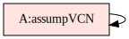
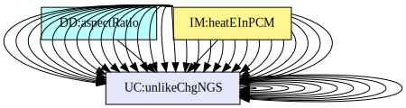
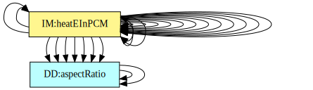
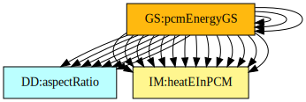
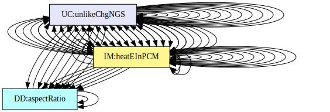

Software Requirements Specification for Solar Water Heating Systems Incorporating PCM
Thulasi Jegatheesan, Brooks MacLachlan, and W. Spencer Smith
Table of Contents
An outline of all sections included in this SRS is recorded here for easy reference.
- Table of Contents
- Reference Material
- Introduction
- General System Description
- Specific System Description
- Requirements
- Likely Changes
- Unlikely Changes
- Traceability Matrices and Graphs
- Values of Auxiliary Constants
- References
Reference Material
This section records information for easy reference.
Table of Units
The unit system used throughout is SI (Système International d’Unités). In addition to the basic units, several derived units are also used. For each unit, the Table of Units lists the symbol, a description, and the SI name.
| Symbol | Description | SI Name |
|---|---|---|
| \({{}^{\circ}\text{C}}\) | temperature | centigrade |
| \({\text{J}}\) | energy | joule |
| \({\text{kg}}\) | mass | kilogram |
| \({\text{m}}\) | length | metre |
| \({\text{s}}\) | time | second |
| \({\text{W}}\) | power | watt |
Table of Units
Table of Symbols
The symbols used in this document are summarized in the Table of Symbols along with their units. The choice of symbols was made to be consistent with the heat transfer literature and with existing documentation for solar water heating systems. The symbols are listed in alphabetical order. For vector quantities, the units shown are for each component of the vector.
| Symbol | Description | Units |
|---|---|---|
| \({A_{\text{C}}}\) | Heating coil surface area | \({\text{m}^{2}}\) |
| \({{A_{\text{C}}}^{\text{max}}}\) | Maximum surface area of coil | \({\text{m}^{2}}\) |
| \({A_{\text{in}}}\) | Surface area over which heat is transferred in | \({\text{m}^{2}}\) |
| \({A_{\text{out}}}\) | Surface area over which heat is transferred out | \({\text{m}^{2}}\) |
| \({A_{\text{P}}}\) | Phase change material surface area | \({\text{m}^{2}}\) |
| \(\mathit{AR}\) | Aspect ratio | – |
| \({\mathit{AR}_{\text{max}}}\) | Maximum aspect ratio | – |
| \({\mathit{AR}_{\text{min}}}\) | Minimum aspect ratio | – |
| \(C\) | Specific heat capacity | \(\frac{\text{J}}{\text{kg}{}^{\circ}\text{C}}\) |
| \({C^{\text{L}}}\) | Specific heat capacity of a liquid | \(\frac{\text{J}}{\text{kg}{}^{\circ}\text{C}}\) |
| \({C^{\text{S}}}\) | Specific heat capacity of a solid | \(\frac{\text{J}}{\text{kg}{}^{\circ}\text{C}}\) |
| \({C^{\text{V}}}\) | Specific heat capacity of a vapour | \(\frac{\text{J}}{\text{kg}{}^{\circ}\text{C}}\) |
| \({{C_{\text{P}}}^{\text{L}}}\) | Specific heat capacity of PCM as a liquid | \(\frac{\text{J}}{\text{kg}{}^{\circ}\text{C}}\) |
| \({{C_{\text{P}}}^{\text{S}}}\) | Specific heat capacity of PCM as a solid | \(\frac{\text{J}}{\text{kg}{}^{\circ}\text{C}}\) |
| \({C_{\text{tol}}}\) | Relative tolerance for conservation of energy | – |
| \({C_{\text{W}}}\) | Specific heat capacity of water | \(\frac{\text{J}}{\text{kg}{}^{\circ}\text{C}}\) |
| \({{C_{\text{W}}}^{\text{max}}}\) | Maximum specific heat capacity of water | \(\frac{\text{J}}{\text{kg}{}^{\circ}\text{C}}\) |
| \({{C_{\text{W}}}^{\text{min}}}\) | Minimum specific heat capacity of water | \(\frac{\text{J}}{\text{kg}{}^{\circ}\text{C}}\) |
| \({{{C_{\text{P}}}^{\text{L}}}_{\text{max}}}\) | Maximum specific heat capacity of PCM as a liquid | \(\frac{\text{J}}{\text{kg}{}^{\circ}\text{C}}\) |
| \({{{C_{\text{P}}}^{\text{L}}}_{\text{min}}}\) | Minimum specific heat capacity of PCM as a liquid | \(\frac{\text{J}}{\text{kg}{}^{\circ}\text{C}}\) |
| \({{{C_{\text{P}}}^{\text{S}}}_{\text{max}}}\) | Maximum specific heat capacity of PCM as a solid | \(\frac{\text{J}}{\text{kg}{}^{\circ}\text{C}}\) |
| \({{{C_{\text{P}}}^{\text{S}}}_{\text{min}}}\) | Minimum specific heat capacity of PCM as a solid | \(\frac{\text{J}}{\text{kg}{}^{\circ}\text{C}}\) |
| \(D\) | Diameter of tank | \({\text{m}}\) |
| \(E\) | Sensible heat | \({\text{J}}\) |
| \({E_{\text{P}}}\) | Change in heat energy in the PCM | \({\text{J}}\) |
| \({E_{\text{W}}}\) | Change in heat energy in the water | \({\text{J}}\) |
| \({{{E_{\text{P}}}_{\text{melt}}}^{\text{init}}}\) | Change in heat energy in the PCM at the instant when melting begins | \({\text{J}}\) |
| \(g\) | Volumetric heat generation per unit volume | \(\frac{\text{W}}{\text{m}^{3}}\) |
| \({H_{\text{f}}}\) | Specific latent heat of fusion | \(\frac{\text{J}}{\text{kg}}\) |
| \({{H_{\text{f}}}_{\text{max}}}\) | Maximum specific latent heat of fusion | \(\frac{\text{J}}{\text{kg}{}^{\circ}\text{C}}\) |
| \({{H_{\text{f}}}_{\text{min}}}\) | Minimum specific latent heat of fusion | \(\frac{\text{J}}{\text{kg}{}^{\circ}\text{C}}\) |
| \(h\) | Convective heat transfer coefficient | \(\frac{\text{W}}{\text{m}^{2}{}^{\circ}\text{C}}\) |
| \({h_{\text{C}}}\) | Convective heat transfer coefficient between coil and water | \(\frac{\text{W}}{\text{m}^{2}{}^{\circ}\text{C}}\) |
| \({{h_{\text{C}}}^{\text{max}}}\) | Maximum convective heat transfer coefficient between coil and water | \(\frac{\text{W}}{\text{m}^{2}{}^{\circ}\text{C}}\) |
| \({{h_{\text{C}}}^{\text{min}}}\) | Minimum convective heat transfer coefficient between coil and water | \(\frac{\text{W}}{\text{m}^{2}{}^{\circ}\text{C}}\) |
| \({h_{\text{min}}}\) | Minimum thickness of a sheet of PCM | \({\text{m}}\) |
| \({h_{\text{P}}}\) | Convective heat transfer coefficient between PCM and water | \(\frac{\text{W}}{\text{m}^{2}{}^{\circ}\text{C}}\) |
| \({{h_{\text{P}}}^{\text{max}}}\) | Maximum convective heat transfer coefficient between PCM and water | \(\frac{\text{W}}{\text{m}^{2}{}^{\circ}\text{C}}\) |
| \({{h_{\text{P}}}^{\text{min}}}\) | Minimum convective heat transfer coefficient between PCM and water | \(\frac{\text{W}}{\text{m}^{2}{}^{\circ}\text{C}}\) |
| \(L\) | Length of tank | \({\text{m}}\) |
| \({L_{\text{max}}}\) | Maximum length of tank | \({\text{m}}\) |
| \({L_{\text{min}}}\) | Minimum length of tank | \({\text{m}}\) |
| \(m\) | Mass | \({\text{kg}}\) |
| \({m_{\text{P}}}\) | Mass of phase change material | \({\text{kg}}\) |
| \({m_{\text{W}}}\) | Mass of water | \({\text{kg}}\) |
| \(\mathit{MINFRACT}\) | Minimum fraction of the tank volume taken up by the PCM | – |
| \(\boldsymbol{\hat{n}}\) | Unit outward normal vector for a surface | – |
| \(Q\) | Latent heat | \({\text{J}}\) |
| \({Q_{\text{P}}}\) | Latent heat energy added to PCM | \({\text{J}}\) |
| \(q\) | Heat flux | \(\frac{\text{W}}{\text{m}^{2}}\) |
| \({q_{\text{C}}}\) | Heat flux into the water from the coil | \(\frac{\text{W}}{\text{m}^{2}}\) |
| \({q_{\text{in}}}\) | Heat flux input | \(\frac{\text{W}}{\text{m}^{2}}\) |
| \({q_{\text{out}}}\) | Heat flux output | \(\frac{\text{W}}{\text{m}^{2}}\) |
| \({q_{\text{P}}}\) | Heat flux into the PCM from water | \(\frac{\text{W}}{\text{m}^{2}}\) |
| \(\boldsymbol{q}\) | Thermal flux vector | \(\frac{\text{W}}{\text{m}^{2}}\) |
| \(S\) | Surface | \({\text{m}^{2}}\) |
| \(T\) | Temperature | \({{}^{\circ}\text{C}}\) |
| \(ΔT\) | Change in temperature | \({{}^{\circ}\text{C}}\) |
| \({T_{\text{boil}}}\) | Boiling point temperature | \({{}^{\circ}\text{C}}\) |
| \({T_{\text{C}}}\) | Temperature of the heating coil | \({{}^{\circ}\text{C}}\) |
| \({T_{\text{env}}}\) | Temperature of the environment | \({{}^{\circ}\text{C}}\) |
| \({T_{\text{init}}}\) | Initial temperature | \({{}^{\circ}\text{C}}\) |
| \({T_{\text{melt}}}\) | Melting point temperature | \({{}^{\circ}\text{C}}\) |
| \({{T_{\text{melt}}}^{\text{P}}}\) | Melting point temperature for PCM | \({{}^{\circ}\text{C}}\) |
| \({T_{\text{P}}}\) | Temperature of the phase change material | \({{}^{\circ}\text{C}}\) |
| \({T_{\text{W}}}\) | Temperature of the water | \({{}^{\circ}\text{C}}\) |
| \(t\) | Time | \({\text{s}}\) |
| \({t_{\text{final}}}\) | Final time | \({\text{s}}\) |
| \({{t_{\text{final}}}^{\text{max}}}\) | Maximum final time | \({\text{s}}\) |
| \({{t_{\text{melt}}}^{\text{final}}}\) | Time at which melting of PCM ends | \({\text{s}}\) |
| \({{t_{\text{melt}}}^{\text{init}}}\) | Time at which melting of PCM begins | \({\text{s}}\) |
| \({t_{\text{step}}}\) | Time step for simulation | \({\text{s}}\) |
| \(V\) | Volume | \({\text{m}^{3}}\) |
| \({V_{\text{P}}}\) | Volume of PCM | \({\text{m}^{3}}\) |
| \({V_{\text{tank}}}\) | Volume of the cylindrical tank | \({\text{m}^{3}}\) |
| \({V_{\text{W}}}\) | Volume of water | \({\text{m}^{3}}\) |
| \(η\) | ODE parameter related to decay rate | – |
| \(π\) | Ratio of circumference to diameter for any circle | – |
| \(ρ\) | Density | \(\frac{\text{kg}}{\text{m}^{3}}\) |
| \({ρ_{\text{P}}}\) | Density of PCM | \(\frac{\text{kg}}{\text{m}^{3}}\) |
| \({{ρ_{\text{P}}}^{\text{max}}}\) | Maximum density of PCM | \(\frac{\text{kg}}{\text{m}^{3}}\) |
| \({{ρ_{\text{P}}}^{\text{min}}}\) | Minimum density of PCM | \(\frac{\text{kg}}{\text{m}^{3}}\) |
| \({ρ_{\text{W}}}\) | Density of water | \(\frac{\text{kg}}{\text{m}^{3}}\) |
| \({{ρ_{\text{W}}}^{\text{max}}}\) | Maximum density of water | \(\frac{\text{kg}}{\text{m}^{3}}\) |
| \({{ρ_{\text{W}}}^{\text{min}}}\) | Minimum density of water | \(\frac{\text{kg}}{\text{m}^{3}}\) |
| \(τ\) | Dummy variable for integration over time | \({\text{s}}\) |
| \({{τ_{\text{P}}}^{\text{L}}}\) | ODE parameter for liquid PCM | \({\text{s}}\) |
| \({{τ_{\text{P}}}^{\text{S}}}\) | ODE parameter for solid PCM | \({\text{s}}\) |
| \({τ_{\text{W}}}\) | ODE parameter for water related to decay time | \({\text{s}}\) |
| \(ϕ\) | Melt fraction | – |
| \(∇\) | Gradient | – |
Table of Symbols
Abbreviations and Acronyms
| Abbreviation | Full Form |
|---|---|
| A | Assumption |
| DD | Data Definition |
| GD | General Definition |
| GS | Goal Statement |
| IM | Instance Model |
| LC | Likely Change |
| ODE | Ordinary Differential Equation |
| PCM | Phase Change Material |
| PS | Physical System Description |
| R | Requirement |
| RHS | Right-Hand Side |
| RefBy | Referenced by |
| Refname | Reference Name |
| SRS | Software Requirements Specification |
| SWHS | Solar Water Heating System |
| TM | Theoretical Model |
| UC | Unlikely Change |
| Uncert. | Typical Uncertainty |
Abbreviations and Acronyms
Introduction
Due to increasing costs, diminishing availability, and negative environmental impact of fossil fuels, the demand is high for renewable energy sources and energy storage technology. Solar water heating systems incorporating phase change material (PCM) use a renewable energy source and provide a novel way of storing energy. Solar water heating systems incorporating PCM improve over the traditional solar water heating systems because of their smaller size. The smaller size is possible because of the ability of PCM to store thermal energy as latent heat, which allows higher thermal energy storage capacity per unit weight.
The following section provides an overview of the Software Requirements Specification (SRS) for solar water heating systems incorporating PCM. The developed program will be referred to as Solar Water Heating System (SWHS) based on the original, manually created version of SWHS. This section explains the purpose of this document, the scope of the requirements, the characteristics of the intended reader, and the organization of the document.
Purpose of Document
The primary purpose of this document is to record the requirements of SWHS. Goals, assumptions, theoretical models, definitions, and other model derivation information are specified, allowing the reader to fully understand and verify the purpose and scientific basis of SWHS. With the exception of system constraints, this SRS will remain abstract, describing what problem is being solved, but not how to solve it.
This document will be used as a starting point for subsequent development phases, including writing the design specification and the software verification and validation plan. The design document will show how the requirements are to be realized, including decisions on the numerical algorithms and programming environment. The verification and validation plan will show the steps that will be used to increase confidence in the software documentation and the implementation. Although the SRS fits in a series of documents that follow the so-called waterfall model, the actual development process is not constrained in any way. Even when the waterfall model is not followed, as Parnas and Clements point out parnasClements1986, the most logical way to present the documentation is still to “fake” a rational design process.
Scope of Requirements
The scope of the requirements includes thermal analysis of a single solar water heating tank incorporating PCM. This entire document is written assuming that the substances inside the solar water heating tank are water and PCM.
Characteristics of Intended Reader
Reviewers of this documentation should have an understanding of heat transfer theory from level 3 or 4 mechanical engineering and differential equations from level 1 and 2 calculus. The users of SWHS can have a lower level of expertise, as explained in Sec:User Characteristics.
Organization of Document
The organization of this document follows the template for an SRS for scientific computing software proposed by koothoor2013, smithLai2005, smithEtAl2007, and smithKoothoor2016. The presentation follows the standard pattern of presenting goals, theories, definitions, and assumptions. For readers that would like a more bottom up approach, they can start reading the instance models and trace back to find any additional information they require.
The goal statements are refined to the theoretical models and the theoretical models to the instance models. The instance models to be solved are referred to as IM:eBalanceOnWtr, IM:eBalanceOnPCM, IM:heatEInWtr, and IM:heatEInPCM. The instance models provide the ordinary differential equations (ODEs) and algebraic equations that model the solar water heating systems incorporating PCM. SWHS solves these ODEs.
General System Description
This section provides general information about the system. It identifies the interfaces between the system and its environment, describes the user characteristics, and lists the system constraints.
System Context
Fig:SysCon shows the system context. A circle represents an external entity outside the software, the user in this case. A rectangle represents the software system itself (SWHS). Arrows are used to show the data flow between the system and its environment.

Figure: System Context
SWHS is mostly self-contained. The only external interaction is through the user interface. The responsibilities of the user and the system are as follows:
- User Responsibilities:
- Provide the input data to the system, ensuring no errors in the data entry
- Take care that consistent units are used for input variables
- SWHS Responsibilities:
- Detect data type mismatch, such as a string of characters instead of a floating point number
- Determine if the inputs satisfy the required physical and software constraints
- Calculate the required outputs
User Characteristics
The end user of SWHS should have an understanding of undergraduate Level 1 Calculus and Physics.
System Constraints
There are no system constraints.
Specific System Description
This section first presents the problem description, which gives a high-level view of the problem to be solved. This is followed by the solution characteristics specification, which presents the assumptions, theories, and definitions that are used.
Problem Description
A system is needed to investigate the effect of employing PCM within a solar water heating tank.
Terminology and Definitions
This subsection provides a list of terms that are used in the subsequent sections and their meaning, with the purpose of reducing ambiguity and making it easier to correctly understand the requirements.
- Heat flux: The rate of thermal energy transfer through a given surface per unit time.
- Phase change material: A substance that uses phase changes (such as melting) to absorb or release large amounts of heat at a constant temperature.
- Specific heat capacity: The amount of energy required to raise the temperature of the unit mass of a given substance by a given amount.
- Thermal conduction: The transfer of heat energy through a substance.
- Transient: Changing with time.
Physical System Description
The physical system of SWHS, as shown in Fig:Tank, includes the following elements:
PS1: Tank containing water.
PS2: Heating coil at bottom of tank. (\({q_{\text{C}}}\) represents the heat flux into the water from the coil.)
PS3: PCM suspended in tank. (\({q_{\text{P}}}\) represents the heat flux into the PCM from water.)
Figure: Solar water heating tank, with heat flux into the water from the coil of \({q_{\text{C}}}\) and heat flux into the PCM from water of \({q_{\text{P}}}\)
Goal Statements
Given the temperature of the heating coil, the initial conditions for the temperature of the water and the temperature of the phase change material, and the material properties, the goal statements are:
Predict-Water-Temperature: Predict the temperature of the water over time.
Predict-PCM-Temperature: Predict the temperature of the phase change material over time.
Predict-Water-Energy: Predict the change in heat energy in the water over time.
Predict-PCM-Energy: Predict the change in heat energy in the PCM over time.
Solution Characteristics Specification
The instance models that govern SWHS are presented in the Instance Model Section. The information to understand the meaning of the instance models and their derivation is also presented, so that the instance models can be verified.
Assumptions
This section simplifies the original problem and helps in developing the theoretical models by filling in the missing information for the physical system. The assumptions refine the scope by providing more detail.
Thermal-Energy-Only: The only form of energy that is relevant for this problem is thermal energy. All other forms of energy, such as mechanical energy, are assumed to be negligible. (RefBy: TM:consThermE.)
Heat-Transfer-Coeffs-Constant: All heat transfer coefficients are constant over time. (RefBy: TM:nwtnCooling.)
Constant-Water-Temp-Across-Tank: The water in the tank is fully mixed, so the temperature of the water is the same throughout the entire tank. (RefBy: GD:rocTempSimp, IM:eBalanceOnWtr, and IM:eBalanceOnPCM.)
Temp-PCM-Constant-Across-Volume: The temperature of the phase change material is the same throughout the volume of PCM. (RefBy: GD:rocTempSimp, IM:eBalanceOnWtr, IM:eBalanceOnPCM, and LC:Uniform-Temperature-PCM.)
Density-Water-PCM-Constant-over-Volume: The density of water and density of PCM have no spatial variation; that is, they are each constant over their entire volume. (RefBy: GD:rocTempSimp.)
Specific-Heat-Energy-Constant-over-Volume: The specific heat capacity of water, specific heat capacity of PCM as a solid, and specific heat capacity of PCM as a liquid have no spatial variation; that is, they are each constant over their entire volume. (RefBy: GD:rocTempSimp.)
Newton-Law-Convective-Cooling-Coil-Water: Newton’s law of convective cooling applies between the heating coil and the water. (RefBy: GD:htFluxWaterFromCoil.)
Temp-Heating-Coil-Constant-over-Time: The temperature of the heating coil is constant over time. (RefBy: GD:htFluxWaterFromCoil and LC:Temperature-Coil-Variable-Over-Day.)
Temp-Heating-Coil-Constant-over-Length: The temperature of the heating coil does not vary along its length. (RefBy: IM:eBalanceOnWtr and LC:Temperature-Coil-Variable-Over-Length.)
Law-Convective-Cooling-Water-PCM: Newton’s law of convective cooling applies between the water and the PCM. (RefBy: GD:htFluxPCMFromWater.)
Charging-Tank-No-Temp-Discharge: The model only accounts for charging of the tank, not discharging. The temperature of the water and temperature of the phase change material can only increase, or remain constant; they do not decrease. This implies that the initial temperature A:Same-Initial-Temp-Water-PCM is less than (or equal) to the temperature of the heating coil. (RefBy: IM:eBalanceOnWtr and LC:Discharging-Tank.)
Same-Initial-Temp-Water-PCM: The initial temperature of the water and the PCM is the same. (RefBy: IM:eBalanceOnWtr, IM:eBalanceOnPCM, LC:Different-Initial-Temps-PCM-Water, and A:Charging-Tank-No-Temp-Discharge.)
PCM-Initially-Solid: The simulation will start with the PCM in a solid state. (RefBy: IM:heatEInPCM and IM:eBalanceOnPCM.)
Water-Always-Liquid: The operating temperature range of the system is such that the water is always in liquid state. That is, the temperature will not drop below the melting point temperature of water, or rise above its boiling point temperature. (RefBy: IM:heatEInWtr, IM:eBalanceOnWtr, and UC:Water-PCM-Fixed-States.)
Perfect-Insulation-Tank: The tank is perfectly insulated so that there is no heat loss from the tank. (RefBy: IM:eBalanceOnWtr and LC:Tank-Lose-Heat.)
No-Internal-Heat-Generation-By-Water-PCM: No internal heat is generated by either the water or the PCM; therefore, the volumetric heat generation per unit volume is zero. (RefBy: IM:eBalanceOnWtr, IM:eBalanceOnPCM, and UC:No-Internal-Heat-Generation.)
Volume-Change-Melting-PCM-Negligible: The volume change of the PCM due to melting is negligible. (RefBy: IM:eBalanceOnPCM.)
No-Gaseous-State-PCM: The PCM is either in a liquid state or a solid state but not a gaseous state. (RefBy: IM:heatEInPCM, IM:eBalanceOnPCM, UC:Water-PCM-Fixed-States, and UC:No-Gaseous-State.)
Atmospheric-Pressure-Tank: The pressure in the tank is atmospheric, so the melting point temperature and boiling point temperature are 0\({{}^{\circ}\text{C}}\) and 100\({{}^{\circ}\text{C}}\), respectively. (RefBy: IM:heatEInWtr and IM:eBalanceOnWtr.)
Volume-Coil-Negligible: When considering the volume of water in the tank, the volume of the heating coil is assumed to be negligible. (RefBy: DD:waterVolume_pcm.)
Theoretical Models
This section focuses on the general equations and laws that SWHS is based on.
| Refname | TM:consThermE |
|---|---|
| Label | Conservation of thermal energy |
| Equation | \[-∇\cdot{}\boldsymbol{q}+g=ρ\,C\,\frac{\,\partial{}T}{\,\partial{}t}\] |
| Description |
|
| Notes |
|
| Source | Fourier Law of Heat Conduction and Heat Equation |
| RefBy | GD:rocTempSimp |
| Refname | TM:sensHtE |
|---|---|
| Label | Sensible heat energy |
| Equation | \[E=\begin{cases}{C^{\text{S}}}\,m\,ΔT, & T\lt{}{T_{\text{melt}}}\\{C^{\text{L}}}\,m\,ΔT, & {T_{\text{melt}}}\lt{}T\lt{}{T_{\text{boil}}}\\{C^{\text{V}}}\,m\,ΔT, & {T_{\text{boil}}}\lt{}T\end{cases}\] |
| Description |
|
| Notes |
|
| Source | Definition of Sensible Heat |
| RefBy | IM:heatEInWtr and IM:heatEInPCM |
| Refname | TM:latentHtE |
|---|---|
| Label | Latent heat energy |
| Equation | \[Q\left(t\right)=\int_{0}^{t}{\frac{\,dQ\left(τ\right)}{\,dτ}}\,dτ\] |
| Description |
|
| Notes |
|
| Source | Definition of Latent Heat |
| RefBy | TM:sensHtE and IM:heatEInPCM |
| Refname | TM:nwtnCooling |
|---|---|
| Label | Newton’s law of cooling |
| Equation | \[q\left(t\right)=h\,ΔT\left(t\right)\] |
| Description |
|
| Notes |
|
| Source | incroperaEtAl2007 (pg. 8) |
| RefBy | GD:htFluxPCMFromWater and GD:htFluxWaterFromCoil |
General Definitions
This section collects the laws and equations that will be used to build the instance models.
| Refname | GD:rocTempSimp |
|---|---|
| Label | Simplified rate of change of temperature |
| Equation | \[m\,C\,\frac{\,dT}{\,dt}={q_{\text{in}}}\,{A_{\text{in}}}-{q_{\text{out}}}\,{A_{\text{out}}}+g\,V\] |
| Description |
|
| Source | – |
| RefBy | GD:rocTempSimp, IM:eBalanceOnWtr, and IM:eBalanceOnPCM |
Detailed derivation of simplified rate of change of temperature:
Integrating TM:consThermE over a volume (\(V\)), we have:
\[-\int_{V}{∇\cdot{}\boldsymbol{q}}\,dV+\int_{V}{g}\,dV=\int_{V}{ρ\,C\,\frac{\,\partial{}T}{\,\partial{}t}}\,dV\]
Applying Gauss’s Divergence Theorem to the first term over the surface \(S\) of the volume, with \(\boldsymbol{q}\) as the thermal flux vector for the surface and \(\boldsymbol{\hat{n}}\) as a unit outward normal vector for a surface:
\[-\int_{S}{\boldsymbol{q}\cdot{}\boldsymbol{\hat{n}}}\,dS+\int_{V}{g}\,dV=\int_{V}{ρ\,C\,\frac{\,\partial{}T}{\,\partial{}t}}\,dV\]
We consider an arbitrary volume. The volumetric heat generation per unit volume is assumed constant. Then Equation (1) can be written as:
\[{q_{\text{in}}}\,{A_{\text{in}}}-{q_{\text{out}}}\,{A_{\text{out}}}+g\,V=\int_{V}{ρ\,C\,\frac{\,\partial{}T}{\,\partial{}t}}\,dV\]
Where \({q_{\text{in}}}\), \({q_{\text{out}}}\), \({A_{\text{in}}}\), and \({A_{\text{out}}}\) are explained in GD:rocTempSimp. The integral over the surface could be simplified because the thermal flux is assumed constant over \({A_{\text{in}}}\) and \({A_{\text{out}}}\) and \(0\) on all other surfaces. Outward flux is considered positive. Assuming \(ρ\), \(C\), and \(T\) are constant over the volume, which is true in our case by A:Constant-Water-Temp-Across-Tank, A:Temp-PCM-Constant-Across-Volume, A:Density-Water-PCM-Constant-over-Volume, and A:Specific-Heat-Energy-Constant-over-Volume, we have:
\[ρ\,C\,V\,\frac{\,dT}{\,dt}={q_{\text{in}}}\,{A_{\text{in}}}-{q_{\text{out}}}\,{A_{\text{out}}}+g\,V\]
Using the fact that \(ρ\)=\(m\)/\(V\), Equation (2) can be written as:
\[m\,C\,\frac{\,dT}{\,dt}={q_{\text{in}}}\,{A_{\text{in}}}-{q_{\text{out}}}\,{A_{\text{out}}}+g\,V\]
| Refname | GD:htFluxWaterFromCoil |
|---|---|
| Label | Heat flux into the water from the coil |
| Units | \(\frac{\text{W}}{\text{m}^{2}}\) |
| Equation | \[{q_{\text{C}}}={h_{\text{C}}}\,\left({T_{\text{C}}}-{T_{\text{W}}}\left(t\right)\right)\] |
| Description |
|
| Notes |
|
| Source | koothoor2013 |
| RefBy | IM:eBalanceOnWtr |
| Refname | GD:htFluxPCMFromWater |
|---|---|
| Label | Heat flux into the PCM from water |
| Units | \(\frac{\text{W}}{\text{m}^{2}}\) |
| Equation | \[{q_{\text{P}}}={h_{\text{P}}}\,\left({T_{\text{W}}}\left(t\right)-{T_{\text{P}}}\left(t\right)\right)\] |
| Description |
|
| Notes |
|
| Source | koothoor2013 |
| RefBy | IM:eBalanceOnWtr and IM:eBalanceOnPCM |
Data Definitions
This section collects and defines all the data needed to build the instance models.
| Refname | DD:waterMass |
|---|---|
| Label | Mass of water |
| Symbol | \({m_{\text{W}}}\) |
| Units | \({\text{kg}}\) |
| Equation | \[{m_{\text{W}}}={V_{\text{W}}}\,{ρ_{\text{W}}}\] |
| Description |
|
| Source | – |
| RefBy | FR:Find-Mass |
| Refname | DD:waterVolume.pcm |
|---|---|
| Label | Volume of water |
| Symbol | \({V_{\text{W}}}\) |
| Units | \({\text{m}^{3}}\) |
| Equation | \[{V_{\text{W}}}={V_{\text{tank}}}-{V_{\text{P}}}\] |
| Description |
|
| Notes |
|
| Source | – |
| RefBy | FR:Find-Mass |
| Refname | DD:tankVolume |
|---|---|
| Label | Volume of the cylindrical tank |
| Symbol | \({V_{\text{tank}}}\) |
| Units | \({\text{m}^{3}}\) |
| Equation | \[{V_{\text{tank}}}=π\,\left(\frac{D}{2}\right)^{2}\,L\] |
| Description |
|
| Source | – |
| RefBy | FR:Find-Mass and DD:waterVolume_pcm |
| Refname | DD:balanceDecayRate |
|---|---|
| Label | ODE parameter for water related to decay time |
| Symbol | \({τ_{\text{W}}}\) |
| Units | \({\text{s}}\) |
| Equation | \[{τ_{\text{W}}}=\frac{{m_{\text{W}}}\,{C_{\text{W}}}}{{h_{\text{C}}}\,{A_{\text{C}}}}\] |
| Description |
|
| Source | koothoor2013 |
| RefBy | IM:eBalanceOnWtr and FR:Output-Input-Derived-Values |
| Refname | DD:balanceDecayTime |
|---|---|
| Label | ODE parameter related to decay rate |
| Symbol | \(η\) |
| Units | Unitless |
| Equation | \[η=\frac{{h_{\text{P}}}\,{A_{\text{P}}}}{{h_{\text{C}}}\,{A_{\text{C}}}}\] |
| Description |
|
| Source | koothoor2013 |
| RefBy | IM:eBalanceOnWtr and FR:Output-Input-Derived-Values |
| Refname | DD:balanceSolidPCM |
|---|---|
| Label | ODE parameter for solid PCM |
| Symbol | \({{τ_{\text{P}}}^{\text{S}}}\) |
| Units | \({\text{s}}\) |
| Equation | \[{{τ_{\text{P}}}^{\text{S}}}=\frac{{m_{\text{P}}}\,{{C_{\text{P}}}^{\text{S}}}}{{h_{\text{P}}}\,{A_{\text{P}}}}\] |
| Description |
|
| Source | lightstone2012 |
| RefBy | IM:eBalanceOnPCM and FR:Output-Input-Derived-Values |
| Refname | DD:balanceLiquidPCM |
|---|---|
| Label | ODE parameter for liquid PCM |
| Symbol | \({{τ_{\text{P}}}^{\text{L}}}\) |
| Units | \({\text{s}}\) |
| Equation | \[{{τ_{\text{P}}}^{\text{L}}}=\frac{{m_{\text{P}}}\,{{C_{\text{P}}}^{\text{L}}}}{{h_{\text{P}}}\,{A_{\text{P}}}}\] |
| Description |
|
| Source | lightstone2012 |
| RefBy | IM:eBalanceOnPCM and FR:Output-Input-Derived-Values |
| Refname | DD:htFusion |
|---|---|
| Label | Specific latent heat of fusion |
| Symbol | \({H_{\text{f}}}\) |
| Units | \(\frac{\text{J}}{\text{kg}}\) |
| Equation | \[{H_{\text{f}}}=\frac{Q}{m}\] |
| Description |
|
| Notes |
|
| Source | bueche1986 (pg. 282) |
| RefBy | IM:heatEInPCM and DD:meltFrac |
| Refname | DD:meltFrac |
|---|---|
| Label | Melt fraction |
| Symbol | \(ϕ\) |
| Units | Unitless |
| Equation | \[ϕ=\frac{{Q_{\text{P}}}}{{H_{\text{f}}}\,{m_{\text{P}}}}\] |
| Description |
|
| Notes |
|
| Source | koothoor2013 |
| RefBy | TM:latentHtE and IM:eBalanceOnPCM |
| Refname | DD:aspectRatio |
|---|---|
| Label | Aspect ratio |
| Symbol | \(\mathit{AR}\) |
| Units | Unitless |
| Equation | \[\mathit{AR}=\frac{D}{L}\] |
| Description |
|
| Source | – |
| RefBy |
Instance Models
This section transforms the problem defined in the problem description into one which is expressed in mathematical terms. It uses concrete symbols defined in the data definitions to replace the abstract symbols in the models identified in theoretical models and general definitions.
The goals GS:Predict-Water-Temperature, GS:Predict-PCM-Temperature, GS:Predict-Water-Energy, and GS:Predict-PCM-Energy are solved by IM:eBalanceOnWtr, IM:eBalanceOnPCM, IM:heatEInWtr, and IM:heatEInPCM. The solutions for IM:eBalanceOnWtr and IM:eBalanceOnPCM are coupled since the solutions for \({T_{\text{W}}}\) and \({T_{\text{P}}}\) depend on one another. IM:heatEInWtr can be solved once IM:eBalanceOnWtr has been solved. The solutions of IM:eBalanceOnPCM and IM:heatEInPCM are also coupled, since the temperature of the phase change material and the change in heat energy in the PCM depend on the phase change.
| Refname | IM:eBalanceOnWtr |
|---|---|
| Label | Energy balance on water to find the temperature of the water |
| Input | \({m_{\text{W}}}\), \({C_{\text{W}}}\), \({h_{\text{C}}}\), \({A_{\text{P}}}\), \({h_{\text{P}}}\), \({A_{\text{C}}}\), \({T_{\text{P}}}\), \({t_{\text{final}}}\), \({T_{\text{C}}}\), \({T_{\text{init}}}\) |
| Output | \({T_{\text{W}}}\) |
| Input Constraints | \[{T_{\text{C}}}\gt{}{T_{\text{init}}}\] |
| Output Constraints | |
| Equation | \[\frac{\,d{T_{\text{W}}}}{\,dt}=\frac{1}{{τ_{\text{W}}}}\,\left({T_{\text{C}}}-{T_{\text{W}}}\left(t\right)+η\,\left({T_{\text{P}}}\left(t\right)-{T_{\text{W}}}\left(t\right)\right)\right)\] |
| Description |
|
| Notes |
|
| Source | koothoor2013 |
| RefBy | IM:eBalanceOnWtr, IM:eBalanceOnPCM, UC:No-Internal-Heat-Generation, FR:Output-Values, FR:Find-Mass, and FR:Calculate-Values |
Detailed derivation of the energy balance on water:
To find the rate of change of \({T_{\text{W}}}\), we look at the energy balance on water. The volume being considered is the volume of water in the tank \({V_{\text{W}}}\), which has mass \({m_{\text{W}}}\) and specific heat capacity, \({C_{\text{W}}}\). Heat transfer occurs in the water from the heating coil as \({q_{\text{C}}}\) (GD:htFluxWaterFromCoil) and from the water into the PCM as \({q_{\text{P}}}\) (GD:htFluxPCMFromWater), over areas \({A_{\text{C}}}\) and \({A_{\text{P}}}\), respectively. The thermal flux is constant over \({A_{\text{C}}}\), since the temperature of the heating coil is assumed to not vary along its length (A:Temp-Heating-Coil-Constant-over-Length), and the thermal flux is constant over \({A_{\text{P}}}\), since the temperature of the PCM is the same throughout its volume (A:Temp-PCM-Constant-Across-Volume) and the water is fully mixed (A:Constant-Water-Temp-Across-Tank). No heat transfer occurs to the outside of the tank, since it has been assumed to be perfectly insulated (A:Perfect-Insulation-Tank). Since the assumption is made that no internal heat is generated (A:No-Internal-Heat-Generation-By-Water-PCM), \(g=0\). Therefore, the equation for GD:rocTempSimp can be written as:
\[{m_{\text{W}}}\,{C_{\text{W}}}\,\frac{\,d{T_{\text{W}}}}{\,dt}={q_{\text{C}}}\,{A_{\text{C}}}-{q_{\text{P}}}\,{A_{\text{P}}}\]
Using GD:htFluxWaterFromCoil for \({q_{\text{C}}}\) and GD:htFluxPCMFromWater for \({q_{\text{P}}}\), this can be written as:
\[{m_{\text{W}}}\,{C_{\text{W}}}\,\frac{\,d{T_{\text{W}}}}{\,dt}={h_{\text{C}}}\,{A_{\text{C}}}\,\left({T_{\text{C}}}-{T_{\text{W}}}\right)-{h_{\text{P}}}\,{A_{\text{P}}}\,\left({T_{\text{W}}}-{T_{\text{P}}}\right)\]
Dividing Equation (2) by \({m_{\text{W}}}\,{C_{\text{W}}}\), we obtain:
\[\frac{\,d{T_{\text{W}}}}{\,dt}=\frac{{h_{\text{C}}}\,{A_{\text{C}}}}{{m_{\text{W}}}\,{C_{\text{W}}}}\,\left({T_{\text{C}}}-{T_{\text{W}}}\right)-\frac{{h_{\text{P}}}\,{A_{\text{P}}}}{{m_{\text{W}}}\,{C_{\text{W}}}}\,\left({T_{\text{W}}}-{T_{\text{P}}}\right)\]
Factoring the negative sign out of the second term of the right-hand side (RHS) of Equation (3) and multiplying it by \({h_{\text{C}}}\) \({A_{\text{C}}}\) / \({h_{\text{C}}}\) \({A_{\text{C}}}\) yields:
\[\frac{\,d{T_{\text{W}}}}{\,dt}=\frac{{h_{\text{C}}}\,{A_{\text{C}}}}{{m_{\text{W}}}\,{C_{\text{W}}}}\,\left({T_{\text{C}}}-{T_{\text{W}}}\right)+\frac{{h_{\text{C}}}\,{A_{\text{C}}}}{{h_{\text{C}}}\,{A_{\text{C}}}}\,\frac{{h_{\text{P}}}\,{A_{\text{P}}}}{{m_{\text{W}}}\,{C_{\text{W}}}}\,\left({T_{\text{P}}}-{T_{\text{W}}}\right)\]
Rearranging this equation gives us:
\[\frac{\,d{T_{\text{W}}}}{\,dt}=\frac{{h_{\text{C}}}\,{A_{\text{C}}}}{{m_{\text{W}}}\,{C_{\text{W}}}}\,\left({T_{\text{C}}}-{T_{\text{W}}}\right)+\frac{{h_{\text{P}}}\,{A_{\text{P}}}}{{h_{\text{C}}}\,{A_{\text{C}}}}\,\frac{{h_{\text{C}}}\,{A_{\text{C}}}}{{m_{\text{W}}}\,{C_{\text{W}}}}\,\left({T_{\text{P}}}-{T_{\text{W}}}\right)\]
By substituting \({τ_{\text{W}}}\) (from DD:balanceDecayRate) and \(η\) (from DD:balanceDecayTime), this can be written as:
\[\frac{\,d{T_{\text{W}}}}{\,dt}=\frac{1}{{τ_{\text{W}}}}\,\left({T_{\text{C}}}-{T_{\text{W}}}\right)+\frac{η}{{τ_{\text{W}}}}\,\left({T_{\text{P}}}-{T_{\text{W}}}\right)\]
Finally, factoring out \(\frac{1}{{τ_{\text{W}}}}\), we are left with the governing ODE for IM:eBalanceOnWtr:
\[\frac{\,d{T_{\text{W}}}}{\,dt}=\frac{1}{{τ_{\text{W}}}}\,\left({T_{\text{C}}}-{T_{\text{W}}}+η\,\left({T_{\text{P}}}-{T_{\text{W}}}\right)\right)\]
| Refname | IM:eBalanceOnPCM |
|---|---|
| Label | Energy Balance on PCM to find temperature of PCM |
| Input | \({{T_{\text{melt}}}^{\text{P}}}\), \({t_{\text{final}}}\), \({T_{\text{init}}}\), \({A_{\text{P}}}\), \({h_{\text{P}}}\), \({m_{\text{P}}}\), \({{C_{\text{P}}}^{\text{S}}}\), \({{C_{\text{P}}}^{\text{L}}}\) |
| Output | \({T_{\text{P}}}\) |
| Input Constraints | \[{{T_{\text{melt}}}^{\text{P}}}\gt{}{T_{\text{init}}}\] |
| Output Constraints | |
| Equation | \[\frac{\,d{T_{\text{P}}}}{\,dt}=\begin{cases}\frac{1}{{{τ_{\text{P}}}^{\text{S}}}}\,\left({T_{\text{W}}}\left(t\right)-{T_{\text{P}}}\left(t\right)\right), & {T_{\text{P}}}\lt{}{{T_{\text{melt}}}^{\text{P}}}\\\frac{1}{{{τ_{\text{P}}}^{\text{L}}}}\,\left({T_{\text{W}}}\left(t\right)-{T_{\text{P}}}\left(t\right)\right), & {T_{\text{P}}}\gt{}{{T_{\text{melt}}}^{\text{P}}}\\0, & {T_{\text{P}}}={{T_{\text{melt}}}^{\text{P}}}\land{}0\lt{}ϕ\lt{}1\end{cases}\] |
| Description |
|
| Notes |
|
| Source | koothoor2013 |
| RefBy | IM:eBalanceOnWtr, UC:No-Internal-Heat-Generation, UC:No-Gaseous-State, FR:Output-Values, FR:Find-Mass, FR:Calculate-Values, FR:Calculate-PCM-Melt-End-Time, and FR:Calculate-PCM-Melt-Begin-Time |
Detailed derivation of the energy balance on the PCM during sensible heating phase:
To find the rate of change of \({T_{\text{P}}}\), we look at the energy balance on the PCM. The volume being considered is the volume of PCM (\({V_{\text{P}}}\)). The derivation that follows is initially for the solid PCM. The mass of phase change material is \({m_{\text{P}}}\) and the specific heat capacity of PCM as a solid is \({{C_{\text{P}}}^{\text{S}}}\). The heat flux into the PCM from water is \({q_{\text{P}}}\) (GD:htFluxPCMFromWater) over phase change material surface area \({A_{\text{P}}}\). The thermal flux is constant over \({A_{\text{P}}}\), since the temperature of the PCM is the same throughout its volume (A:Temp-PCM-Constant-Across-Volume) and the water is fully mixed (A:Constant-Water-Temp-Across-Tank). There is no heat flux output from the PCM. Assuming no volumetric heat generation per unit volume (A:No-Internal-Heat-Generation-By-Water-PCM), \(g=0\), the equation for GD:rocTempSimp can be written as:
\[{m_{\text{P}}}\,{{C_{\text{P}}}^{\text{S}}}\,\frac{\,d{T_{\text{P}}}}{\,dt}={q_{\text{P}}}\,{A_{\text{P}}}\]
Using GD:htFluxPCMFromWater for \({q_{\text{P}}}\), this equation can be written as:
\[{m_{\text{P}}}\,{{C_{\text{P}}}^{\text{S}}}\,\frac{\,d{T_{\text{P}}}}{\,dt}={h_{\text{P}}}\,{A_{\text{P}}}\,\left({T_{\text{W}}}-{T_{\text{P}}}\right)\]
Dividing by \({m_{\text{P}}}\) \({{C_{\text{P}}}^{\text{S}}}\) we obtain:
\[\frac{\,d{T_{\text{P}}}}{\,dt}=\frac{{h_{\text{P}}}\,{A_{\text{P}}}}{{m_{\text{P}}}\,{{C_{\text{P}}}^{\text{S}}}}\,\left({T_{\text{W}}}-{T_{\text{P}}}\right)\]
By substituting \({{τ_{\text{P}}}^{\text{S}}}\) (from DD:balanceSolidPCM), this can be written as:
\[\frac{\,d{T_{\text{P}}}}{\,dt}=\frac{1}{{{τ_{\text{P}}}^{\text{S}}}}\,\left({T_{\text{W}}}-{T_{\text{P}}}\right)\]
Equation (4) applies for the solid PCM. In the case where all of the PCM is melted, the same derivation applies, except that \({{C_{\text{P}}}^{\text{S}}}\) is replaced by \({{C_{\text{P}}}^{\text{L}}}\), and thus \({{τ_{\text{P}}}^{\text{S}}}\) is replaced by \({{τ_{\text{P}}}^{\text{L}}}\). Although a small change in surface area would be expected with melting, this is not included, since the volume change of the PCM with melting is assumed to be negligible (A:Volume-Change-Melting-PCM-Negligible).
In the case where \({T_{\text{P}}}={{T_{\text{melt}}}^{\text{P}}}\) and not all of the PCM is melted, the temperature of the phase change material does not change. Therefore, d \({T_{\text{P}}}\) / d \(t\) = 0.
This derivation does not consider the boiling of the PCM, as the PCM is assumed to either be in a solid state or a liquid state (A:No-Gaseous-State-PCM).
| Refname | IM:heatEInWtr |
|---|---|
| Label | Heat energy in the water |
| Input | \({T_{\text{init}}}\), \({m_{\text{W}}}\), \({C_{\text{W}}}\), \({m_{\text{W}}}\) |
| Output | \({E_{\text{W}}}\) |
| Input Constraints | |
| Output Constraints | |
| Equation | \[{E_{\text{W}}}\left(t\right)={C_{\text{W}}}\,{m_{\text{W}}}\,\left({T_{\text{W}}}\left(t\right)-{T_{\text{init}}}\right)\] |
| Description |
|
| Notes |
|
| Source | koothoor2013 |
| RefBy | FR:Output-Values, FR:Find-Mass, and FR:Calculate-Values |
| Refname | IM:heatEInPCM |
|---|---|
| Label | Heat energy in the PCM |
| Input | \({{T_{\text{melt}}}^{\text{P}}}\), \({t_{\text{final}}}\), \({T_{\text{init}}}\), \({A_{\text{P}}}\), \({h_{\text{P}}}\), \({m_{\text{P}}}\), \({{C_{\text{P}}}^{\text{S}}}\), \({{C_{\text{P}}}^{\text{L}}}\), \({T_{\text{P}}}\), \({H_{\text{f}}}\), \({{t_{\text{melt}}}^{\text{init}}}\) |
| Output | \({E_{\text{P}}}\) |
| Input Constraints | \[{{T_{\text{melt}}}^{\text{P}}}\gt{}{T_{\text{init}}}\] |
| Output Constraints | |
| Equation | \[{E_{\text{P}}}=\begin{cases}{{C_{\text{P}}}^{\text{S}}}\,{m_{\text{P}}}\,\left({T_{\text{P}}}\left(t\right)-{T_{\text{init}}}\right), & {T_{\text{P}}}\lt{}{{T_{\text{melt}}}^{\text{P}}}\\{{{E_{\text{P}}}_{\text{melt}}}^{\text{init}}}+{H_{\text{f}}}\,{m_{\text{P}}}+{{C_{\text{P}}}^{\text{L}}}\,{m_{\text{P}}}\,\left({T_{\text{P}}}\left(t\right)-{{T_{\text{melt}}}^{\text{P}}}\right), & {T_{\text{P}}}\gt{}{{T_{\text{melt}}}^{\text{P}}}\\{{{E_{\text{P}}}_{\text{melt}}}^{\text{init}}}+{Q_{\text{P}}}\left(t\right), & {T_{\text{P}}}={{T_{\text{melt}}}^{\text{P}}}\land{}0\lt{}ϕ\lt{}1\end{cases}\] |
| Description |
|
| Notes |
|
| Source | koothoor2013 |
| RefBy | IM:eBalanceOnPCM, UC:No-Gaseous-State, FR:Output-Values, FR:Find-Mass, and FR:Calculate-Values |
Data Constraints
The Data Constraints Table shows the data constraints on the input variables. The column for physical constraints gives the physical limitations on the range of values that can be taken by the variable. The uncertainty column provides an estimate of the confidence with which the physical quantities can be measured. This information would be part of the input if one were performing an uncertainty quantification exercise. The constraints are conservative to give the user of the model the flexibility to experiment with unusual situations. The column of typical values is intended to provide a feel for a common scenario. The column for software constraints restricts the range of inputs to reasonable values. (*) These quantities cannot be equal to zero, or there will be a divide by zero in the model. (+) These quantities cannot be zero, or there would be freezing (A:PCM-Initially-Solid). (++) The constraints on the surface area are calculated by considering the surface area to volume ratio. The assumption is that the lowest ratio is 1 and the highest possible is \(\frac{2}{{h_{\text{min}}}}\), where \({h_{\text{min}}}\) is the thickness of a “sheet” of PCM. A thin sheet has the greatest surface area to volume ratio. (**) The constraint on the maximum time at the end of the simulation is the total number of seconds in one day.
| Var | Physical Constraints | Software Constraints | Typical Value | Uncert. |
|---|---|---|---|---|
| \({A_{\text{C}}}\) | \({A_{\text{C}}}\gt{}0\) | \({A_{\text{C}}}\leq{}{{A_{\text{C}}}^{\text{max}}}\) | \(0.12\) \({\text{m}^{2}}\) | 10\(\%\) |
| \({A_{\text{P}}}\) | \({A_{\text{P}}}\gt{}0\) | \({V_{\text{P}}}\leq{}{A_{\text{P}}}\leq{}\frac{2}{{h_{\text{min}}}}\,{V_{\text{tank}}}\) | \(1.2\) \({\text{m}^{2}}\) | 10\(\%\) |
| \({{C_{\text{P}}}^{\text{L}}}\) | \({{C_{\text{P}}}^{\text{L}}}\gt{}0\) | \({{{C_{\text{P}}}^{\text{L}}}_{\text{min}}}\lt{}{{C_{\text{P}}}^{\text{L}}}\lt{}{{{C_{\text{P}}}^{\text{L}}}_{\text{max}}}\) | \(2270\) \(\frac{\text{J}}{\text{kg}{}^{\circ}\text{C}}\) | 10\(\%\) |
| \({{C_{\text{P}}}^{\text{S}}}\) | \({{C_{\text{P}}}^{\text{S}}}\gt{}0\) | \({{{C_{\text{P}}}^{\text{S}}}_{\text{min}}}\lt{}{{C_{\text{P}}}^{\text{S}}}\lt{}{{{C_{\text{P}}}^{\text{S}}}_{\text{max}}}\) | \(1760\) \(\frac{\text{J}}{\text{kg}{}^{\circ}\text{C}}\) | 10\(\%\) |
| \({C_{\text{W}}}\) | \({C_{\text{W}}}\gt{}0\) | \({{C_{\text{W}}}^{\text{min}}}\lt{}{C_{\text{W}}}\lt{}{{C_{\text{W}}}^{\text{max}}}\) | \(4186\) \(\frac{\text{J}}{\text{kg}{}^{\circ}\text{C}}\) | 10\(\%\) |
| \(D\) | \(D\gt{}0\) | \({\mathit{AR}_{\text{min}}}\leq{}D\leq{}{\mathit{AR}_{\text{max}}}\) | \(0.412\) \({\text{m}}\) | 10\(\%\) |
| \({H_{\text{f}}}\) | \({H_{\text{f}}}\gt{}0\) | \({{H_{\text{f}}}_{\text{min}}}\lt{}{H_{\text{f}}}\lt{}{{H_{\text{f}}}_{\text{max}}}\) | \(211600\) \(\frac{\text{J}}{\text{kg}}\) | 10\(\%\) |
| \({h_{\text{C}}}\) | \({h_{\text{C}}}\gt{}0\) | \({{h_{\text{C}}}^{\text{min}}}\leq{}{h_{\text{C}}}\leq{}{{h_{\text{C}}}^{\text{max}}}\) | \(1000\) \(\frac{\text{W}}{\text{m}^{2}{}^{\circ}\text{C}}\) | 10\(\%\) |
| \({h_{\text{P}}}\) | \({h_{\text{P}}}\gt{}0\) | \({{h_{\text{P}}}^{\text{min}}}\leq{}{h_{\text{P}}}\leq{}{{h_{\text{P}}}^{\text{max}}}\) | \(1000\) \(\frac{\text{W}}{\text{m}^{2}{}^{\circ}\text{C}}\) | 10\(\%\) |
| \(L\) | \(L\gt{}0\) | \({L_{\text{min}}}\leq{}L\leq{}{L_{\text{max}}}\) | \(1.5\) \({\text{m}}\) | 10\(\%\) |
| \({T_{\text{C}}}\) | \(0\lt{}{T_{\text{C}}}\lt{}100\) | – | \(50\) \({{}^{\circ}\text{C}}\) | 10\(\%\) |
| \({T_{\text{init}}}\) | \(0\lt{}{T_{\text{init}}}\lt{}{T_{\text{melt}}}\) | – | \(40\) \({{}^{\circ}\text{C}}\) | 10\(\%\) |
| \({{T_{\text{melt}}}^{\text{P}}}\) | \(0\lt{}{{T_{\text{melt}}}^{\text{P}}}\lt{}{T_{\text{C}}}\) | – | \(44.2\) \({{}^{\circ}\text{C}}\) | 10\(\%\) |
| \({t_{\text{final}}}\) | \({t_{\text{final}}}\gt{}0\) | \({t_{\text{final}}}\lt{}{{t_{\text{final}}}^{\text{max}}}\) | \(50000\) \({\text{s}}\) | 10\(\%\) |
| \({t_{\text{step}}}\) | \(0\lt{}{t_{\text{step}}}\lt{}{t_{\text{final}}}\) | – | \(0.01\) \({\text{s}}\) | 10\(\%\) |
| \({V_{\text{P}}}\) | \(0\lt{}{V_{\text{P}}}\lt{}{V_{\text{tank}}}\) | \({V_{\text{P}}}\geq{}\mathit{MINFRACT}\,{V_{\text{tank}}}\) | \(0.05\) \({\text{m}^{3}}\) | 10\(\%\) |
| \({ρ_{\text{P}}}\) | \({ρ_{\text{P}}}\gt{}0\) | \({{ρ_{\text{P}}}^{\text{min}}}\lt{}{ρ_{\text{P}}}\lt{}{{ρ_{\text{P}}}^{\text{max}}}\) | \(1007\) \(\frac{\text{kg}}{\text{m}^{3}}\) | 10\(\%\) |
| \({ρ_{\text{W}}}\) | \({ρ_{\text{W}}}\gt{}0\) | \({{ρ_{\text{W}}}^{\text{min}}}\lt{}{ρ_{\text{W}}}\leq{}{{ρ_{\text{W}}}^{\text{max}}}\) | \(1000\) \(\frac{\text{kg}}{\text{m}^{3}}\) | 10\(\%\) |
Input Data Constraints
Properties of a Correct Solution
The Data Constraints Table shows the data constraints on the output variables. The column for physical constraints gives the physical limitations on the range of values that can be taken by the variable.
| Var | Physical Constraints |
|---|---|
| \({T_{\text{W}}}\) | \({T_{\text{init}}}\leq{}{T_{\text{W}}}\leq{}{T_{\text{C}}}\) |
| \({T_{\text{P}}}\) | \({T_{\text{init}}}\leq{}{T_{\text{P}}}\leq{}{T_{\text{C}}}\) |
| \({E_{\text{W}}}\) | \({E_{\text{W}}}\geq{}0\) |
| \({E_{\text{P}}}\) | \({E_{\text{P}}}\geq{}0\) |
Output Data Constraints
A correct solution must exhibit the law of conservation of energy. This means that the change in heat energy in the water should equal the difference between the total energy input from the heating coil and the energy output to the PCM. This can be shown as an equation by taking GD:htFluxWaterFromCoil and GD:htFluxPCMFromWater, multiplying each by their respective surface area of heat transfer, and integrating each over the simulation time, as follows:
\[{E_{\text{W}}}=\int_{0}^{t}{{h_{\text{C}}}\,{A_{\text{C}}}\,\left({T_{\text{C}}}-{T_{\text{W}}}\left(t\right)\right)}\,dt-\int_{0}^{t}{{h_{\text{P}}}\,{A_{\text{P}}}\,\left({T_{\text{W}}}\left(t\right)-{T_{\text{P}}}\left(t\right)\right)}\,dt\]
In addition, the change in heat energy in the PCM should equal the energy input to the PCM from the water. This can be expressed as
\[{E_{\text{P}}}=\int_{0}^{t}{{h_{\text{P}}}\,{A_{\text{P}}}\,\left({T_{\text{W}}}\left(t\right)-{T_{\text{P}}}\left(t\right)\right)}\,dt\]
Equations (FIXME: Equation 7) and (FIXME: Equation 8) can be used as “sanity” checks to gain confidence in any solution computed by SWHS. The relative error between the results computed by SWHS and the results calculated from the RHS of these equations should be less than \({C_{\text{tol}}}\) FR:Verify-Energy-Output-Follow-Conservation-of-Energy.
Requirements
This section provides the functional requirements, the tasks and behaviours that the software is expected to complete, and the non-functional requirements, the qualities that the software is expected to exhibit.
Functional Requirements
This section provides the functional requirements, the tasks and behaviours that the software is expected to complete.
Input-Values: Input the values from Tab:ReqInputs, which define the tank parameters, material properties, and initial conditions.
Find-Mass: Use the inputs in FR:Input-Values to find the masses needed for IM:eBalanceOnWtr, IM:eBalanceOnPCM, IM:heatEInWtr, and IM:heatEInPCM, using DD:waterMass, DD:waterVolume_pcm, and DD:tankVolume.
Check-Input-with-Physical_Constraints: Verify that the inputs satisfy the required physical constraints.
Output-Input-Derived-Values: Output the input values and derived values in the following list: the values (from FR:Input-Values), the masses (from FR:Find-Mass), \({τ_{\text{W}}}\) (from DD:balanceDecayRate), \(η\) (from DD:balanceDecayTime), \({{τ_{\text{P}}}^{\text{S}}}\) (from DD:balanceSolidPCM), and \({{τ_{\text{P}}}^{\text{L}}}\) (from DD:balanceLiquidPCM).
Calculate-Values: Calculate the following values: \({T_{\text{W}}}\)(\(t\)) (from IM:eBalanceOnWtr), \({T_{\text{P}}}\)(\(t\)) (from IM:eBalanceOnPCM), \({E_{\text{W}}}\)(\(t\)) (from IM:heatEInWtr), and \({E_{\text{P}}}\)(\(t\)) (from IM:heatEInPCM).
Verify-Energy-Output-Follow-Conservation-of-Energy: Verify that the energy outputs (\({E_{\text{W}}}\)(\(t\)) and \({E_{\text{P}}}\)(\(t\))) follow the law of conservation of energy, as outlined in Properties of a Correct Solution, with relative error no greater than \({C_{\text{tol}}}\).
Calculate-PCM-Melt-Begin-Time: Calculate and output the time at which the PCM begins to melt \({{t_{\text{melt}}}^{\text{init}}}\) (from IM:eBalanceOnPCM).
Calculate-PCM-Melt-End-Time: Calculate and output the time at which the PCM stops melting \({{t_{\text{melt}}}^{\text{final}}}\) (from IM:eBalanceOnPCM).
Output-Values: Output \({T_{\text{W}}}\)(\(t\)) (from IM:eBalanceOnWtr), \({T_{\text{P}}}\)(\(t\)) (from IM:eBalanceOnPCM), \({E_{\text{W}}}\)(\(t\)) (from IM:heatEInWtr), and \({E_{\text{P}}}\)(\(t\)) (from IM:heatEInPCM).
| Symbol | Description | Units |
|---|---|---|
| \({A_{\text{C}}}\) | Heating coil surface area | \({\text{m}^{2}}\) |
| \({A_{\text{P}}}\) | Phase change material surface area | \({\text{m}^{2}}\) |
| \({A_{\text{tol}}}\) | Absolute tolerance | – |
| \({{C_{\text{P}}}^{\text{L}}}\) | Specific heat capacity of PCM as a liquid | \(\frac{\text{J}}{\text{kg}{}^{\circ}\text{C}}\) |
| \({{C_{\text{P}}}^{\text{S}}}\) | Specific heat capacity of PCM as a solid | \(\frac{\text{J}}{\text{kg}{}^{\circ}\text{C}}\) |
| \({C_{\text{W}}}\) | Specific heat capacity of water | \(\frac{\text{J}}{\text{kg}{}^{\circ}\text{C}}\) |
| \(D\) | Diameter of tank | \({\text{m}}\) |
| \({H_{\text{f}}}\) | Specific latent heat of fusion | \(\frac{\text{J}}{\text{kg}}\) |
| \({h_{\text{C}}}\) | Convective heat transfer coefficient between coil and water | \(\frac{\text{W}}{\text{m}^{2}{}^{\circ}\text{C}}\) |
| \({h_{\text{P}}}\) | Convective heat transfer coefficient between PCM and water | \(\frac{\text{W}}{\text{m}^{2}{}^{\circ}\text{C}}\) |
| \(L\) | Length of tank | \({\text{m}}\) |
| \({R_{\text{tol}}}\) | Relative tolerance | – |
| \({T_{\text{C}}}\) | Temperature of the heating coil | \({{}^{\circ}\text{C}}\) |
| \({T_{\text{init}}}\) | Initial temperature | \({{}^{\circ}\text{C}}\) |
| \({{T_{\text{melt}}}^{\text{P}}}\) | Melting point temperature for PCM | \({{}^{\circ}\text{C}}\) |
| \({t_{\text{final}}}\) | Final time | \({\text{s}}\) |
| \({t_{\text{step}}}\) | Time step for simulation | \({\text{s}}\) |
| \({V_{\text{P}}}\) | Volume of PCM | \({\text{m}^{3}}\) |
| \({ρ_{\text{P}}}\) | Density of PCM | \(\frac{\text{kg}}{\text{m}^{3}}\) |
| \({ρ_{\text{W}}}\) | Density of water | \(\frac{\text{kg}}{\text{m}^{3}}\) |
Required Inputs
Non-Functional Requirements
This section provides the non-functional requirements, the qualities that the software is expected to exhibit.
Correctness: The outputs of the code have the properties of a correct solution.
Verifiability: The code is tested with complete verification and validation plan.
Understandability: The code is modularized with complete module guide and module interface specification.
Reusability: The code is modularized.
Maintainability: If a likely change is made to the finished software, it will take at most 10\(\%\) of the original development time, assuming the same development resources are available.
Likely Changes
This section lists the likely changes to be made to the software.
Uniform-Temperature-PCM: A:Temp-PCM-Constant-Across-Volume - PCM is actually a poor thermal conductor, so the assumption of uniform temperature of the phase change material is not likely.
Temperature-Coil-Variable-Over-Day: A:Temp-Heating-Coil-Constant-over-Time - The temperature of the heating coil will change over the course of the day, depending on the energy received from the sun.
Temperature-Coil-Variable-Over-Length: A:Temp-Heating-Coil-Constant-over-Length - The temperature of the heating coil will actually change along its length as the water within it cools.
Discharging-Tank: A:Charging-Tank-No-Temp-Discharge - The model currently only accounts for charging of the tank. A more complete model would also account for discharging of the tank.
Different-Initial-Temps-PCM-Water: A:Same-Initial-Temp-Water-PCM - To add more flexibility to the simulation, the initial temperature of the water and the PCM could be allowed to have different values.
Tank-Lose-Heat: A:Perfect-Insulation-Tank - Any real tank cannot be perfectly insulated and will lose heat.
Unlikely Changes
This section lists the unlikely changes to be made to the software.
Water-PCM-Fixed-States: A:Water-Always-Liquid, A:No-Gaseous-State-PCM - It is unlikely for the change of water from liquid to a solid or the state change of the phase change material from a liquid to a gas to be considered.
No-Internal-Heat-Generation: A:No-Internal-Heat-Generation-By-Water-PCM - Is used for the derivations of IM:eBalanceOnWtr and IM:eBalanceOnPCM.
No-Gaseous-State: A:No-Gaseous-State-PCM - Is used for the derivation of IM:eBalanceOnPCM and for the equation given by IM:heatEInPCM to be valid.
Traceability Matrices and Graphs
The purpose of the traceability matrices is to provide easy references on what has to be additionally modified if a certain component is changed. Every time a component is changed, the items in the column of that component that are marked with an “X” should be modified as well. Tab:TraceMatAvsA shows the dependencies of the assumptions on each other. Tab:TraceMatAvsAll shows the dependencies of the data definitions, theoretical models, general definitions, instance models, requirements, likely changes, and unlikely changes on the assumptions. Tab:TraceMatRefvsRef shows the dependencies of the data definitions, theoretical models, general definitions, and instance models on each other. Tab:TraceMatAllvsR shows the dependencies of the requirements and goal statements on the data definitions, theoretical models, general definitions, and instance models.
Traceability Matrix Showing the Connections Between Assumptions and Other Assumptions
Traceability Matrix Showing the Connections Between Assumptions and Other Items
Traceability Matrix Showing the Connections Between Items and Other Sections
Traceability Matrix Showing the Connections Between Requirements, Goal Statements and Other Items
The purpose of the traceability graphs is also to provide easy references on what has to be additionally modified if a certain component is changed. The arrows in the graphs represent dependencies. The component at the tail of an arrow is depended on by the component at the head of that arrow. Therefore, if a component is changed, the components that it points to should also be changed. Fig:TraceGraphAvsA shows the dependencies of assumptions on each other. Fig:TraceGraphAvsAll shows the dependencies of data definitions, theoretical models, general definitions, instance models, requirements, likely changes, and unlikely changes on the assumptions. Fig:TraceGraphRefvsRef shows the dependencies of data definitions, theoretical models, general definitions, and instance models on each other. Fig:TraceGraphAllvsR shows the dependencies of requirements and goal statements on the data definitions, theoretical models, general definitions, and instance models. Fig:TraceGraphAllvsAll shows the dependencies of dependencies of assumptions, models, definitions, requirements, goals, and changes with each other.

Figure: TraceGraphAvsA

Figure: TraceGraphAvsAll

Figure: TraceGraphRefvsRef

Figure: TraceGraphAllvsR

Figure: TraceGraphAllvsAll
For convenience, the following graphs can be found at the links below:
{kind=link}
{kind=link}
{kind=link}
{kind=link}
{kind=link}
Values of Auxiliary Constants
This section contains the standard values that are used for calculations in SWHS.
| Symbol | Description | Value | Unit |
|---|---|---|---|
| \({{A_{\text{C}}}^{\text{max}}}\) | maximum surface area of coil | \(100000\) | \({\text{m}^{2}}\) |
| \({\mathit{AR}_{\text{max}}}\) | maximum aspect ratio | \(100\) | – |
| \({\mathit{AR}_{\text{min}}}\) | minimum aspect ratio | \(0.01\) | – |
| \({C_{\text{tol}}}\) | relative tolerance for conservation of energy | \(0.001\%\) | – |
| \({{C_{\text{W}}}^{\text{max}}}\) | maximum specific heat capacity of water | \(4210\) | \(\frac{\text{J}}{\text{kg}{}^{\circ}\text{C}}\) |
| \({{C_{\text{W}}}^{\text{min}}}\) | minimum specific heat capacity of water | \(4170\) | \(\frac{\text{J}}{\text{kg}{}^{\circ}\text{C}}\) |
| \({{{C_{\text{P}}}^{\text{L}}}_{\text{max}}}\) | maximum specific heat capacity of PCM as a liquid | \(5000\) | \(\frac{\text{J}}{\text{kg}{}^{\circ}\text{C}}\) |
| \({{{C_{\text{P}}}^{\text{L}}}_{\text{min}}}\) | minimum specific heat capacity of PCM as a liquid | \(100\) | \(\frac{\text{J}}{\text{kg}{}^{\circ}\text{C}}\) |
| \({{{C_{\text{P}}}^{\text{S}}}_{\text{max}}}\) | maximum specific heat capacity of PCM as a solid | \(4000\) | \(\frac{\text{J}}{\text{kg}{}^{\circ}\text{C}}\) |
| \({{{C_{\text{P}}}^{\text{S}}}_{\text{min}}}\) | minimum specific heat capacity of PCM as a solid | \(100\) | \(\frac{\text{J}}{\text{kg}{}^{\circ}\text{C}}\) |
| \({{H_{\text{f}}}_{\text{max}}}\) | maximum specific latent heat of fusion | \(1000000\) | \(\frac{\text{J}}{\text{kg}{}^{\circ}\text{C}}\) |
| \({{H_{\text{f}}}_{\text{min}}}\) | minimum specific latent heat of fusion | \(0\) | \(\frac{\text{J}}{\text{kg}{}^{\circ}\text{C}}\) |
| \({{h_{\text{C}}}^{\text{max}}}\) | maximum convective heat transfer coefficient between coil and water | \(10000\) | \(\frac{\text{W}}{\text{m}^{2}{}^{\circ}\text{C}}\) |
| \({{h_{\text{C}}}^{\text{min}}}\) | minimum convective heat transfer coefficient between coil and water | \(10\) | \(\frac{\text{W}}{\text{m}^{2}{}^{\circ}\text{C}}\) |
| \({{h_{\text{P}}}^{\text{max}}}\) | maximum convective heat transfer coefficient between PCM and water | \(10000\) | \(\frac{\text{W}}{\text{m}^{2}{}^{\circ}\text{C}}\) |
| \({{h_{\text{P}}}^{\text{min}}}\) | minimum convective heat transfer coefficient between PCM and water | \(10\) | \(\frac{\text{W}}{\text{m}^{2}{}^{\circ}\text{C}}\) |
| \({L_{\text{max}}}\) | maximum length of tank | \(50\) | \({\text{m}}\) |
| \({L_{\text{min}}}\) | minimum length of tank | \(0.1\) | \({\text{m}}\) |
| \(\mathit{MINFRACT}\) | minimum fraction of the tank volume taken up by the PCM | \(1.0\cdot{}10^{-6}\) | – |
| \({{t_{\text{final}}}^{\text{max}}}\) | maximum final time | \(86400\) | \({\text{s}}\) |
| \({{ρ_{\text{P}}}^{\text{max}}}\) | maximum density of PCM | \(20000\) | \(\frac{\text{kg}}{\text{m}^{3}}\) |
| \({{ρ_{\text{P}}}^{\text{min}}}\) | minimum density of PCM | \(500\) | \(\frac{\text{kg}}{\text{m}^{3}}\) |
| \({{ρ_{\text{W}}}^{\text{max}}}\) | maximum density of water | \(1000\) | \(\frac{\text{kg}}{\text{m}^{3}}\) |
| \({{ρ_{\text{W}}}^{\text{min}}}\) | minimum density of water | \(950\) | \(\frac{\text{kg}}{\text{m}^{3}}\) |
Auxiliary Constants
References
[1]: Bueche, J. Frederick. Introduction to Physics for Scientists. 4th. ed., New York City, New York: McGraw Hill, 1986. Print.
[2]: Incropera, F. P., Dewitt, D. P., Bergman, T. L., and Lavine, A. S. Fundamentals of Heat and Mass Transfer. 6th. ed., Hoboken, New Jersey: John Wiley and Sons, 2007. Print.
[3]: Koothoor, Nirmitha. A Document Driven Approach to Certifying Scientific Computing Software. McMaster University, Hamilton, ON, Canada: 2013. Print.
[4]: Lightstone, Marilyn. Derivation of tank/pcm model. 2012. From Marilyn Lightstone’s Personal Notes
[5]: Parnas, David L. and Clements, P. C. “A rational design process: How and why to fake it.” IEEE Transactions on Software Engineering, vol. 12, no. 2, Washington, USA: February, 1986. pp. 251–257. Print.
[6]: Smith, W. Spencer and Koothoor, Nirmitha. “A Document-Driven Method for Certifying Scientific Computing Software for Use in Nuclear Safety Analysis.” Nuclear Engineering and Technology, vol. 48, no. 2, April, 2016. http://www.sciencedirect.com/science/article/pii/S1738573315002582. pp. 404–418.
[7]: Smith, W. Spencer and Lai, Lei. “A new requirements template for scientific computing.” Proceedings of the First International Workshop on Situational Requirements Engineering Processes - Methods, Techniques and Tools to Support Situation-Specific Requirements Engineering Processes, SREP’05. Edited by PJ Agerfalk, N. Kraiem, and J. Ralyte, Paris, France: 2005. pp. 107–121. In conjunction with 13th IEEE International Requirements Engineering Conference,
[8]: Smith, W. Spencer, Lai, Lei, and Khedri, Ridha. “Requirements Analysis for Engineering Computation: A Systematic Approach for Improving Software Reliability.” Reliable Computing, Special Issue on Reliable Engineering Computation, vol. 13, no. 1, February, 2007. https://doi.org/10.1007/s11155-006-9020-7. pp. 83–107.